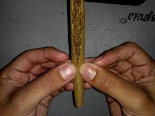
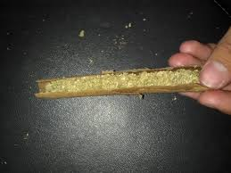
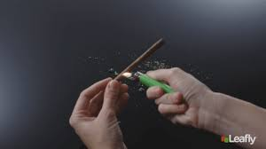

Split the Wrap
To roll your blunt you’ll need a tobacco wrap. Traditionally, connoisseurs will empty a cigarillo (like Swisher Sweets, Phillies, or Backwoods), but these day you can find empty wraps at the corner store. Use a blade to cut the blunt lengthwise, or if you’ve got the right touch you can “crack” the blunt using your fingers. Once you’ve split the blunt, empty the tobacco from the middle and discard (or if you like to smoke spliffs, save it for later).
Fill the Wrap
Fill the empty tobacco wrapping with ground cannabis. For a standard size cigarillo one to two grams is plenty, though if you’re sharing your blunt, are an experienced roller, or are using a blunt wrap, you should be able to fit a fair amount more.
Roll the Blunt Wrap
Roll the cannabis between your fingers to pack the blunt evenly. Be careful: if you didn’t moisten the wrap enough, it may crack. Once you’ve packed and shaped your blunt, tuck the wrap under itself and wet the inside of the exposed edge from end to end. Use your fingers to smooth out any wrinkles. (Tip: if you poke a hole or if the blunt cracks at all while you’re working with it, you can use the gummy adhesive from rolling papers to repair it.)
Bake the Blunt
Now that your blunt is rolled, you’ll want to “bake” or dry it to help seal it together and encourage an even burn. Bake your blunt by running a lighter lengthwise under the seam and around the outside. Be careful not to hold the lighter too close — you only want the heat, not the flame.
Enjoy!
Now that you’ve got your blunt rolled, all tha’s’ left is to light the end and enjoy with some friends! What’s your favorite trick for rolling a blunt? Share your tips, fond memories while smoking blunts, or different ways to roll a blunt in the comments below and pass along the skill to others!